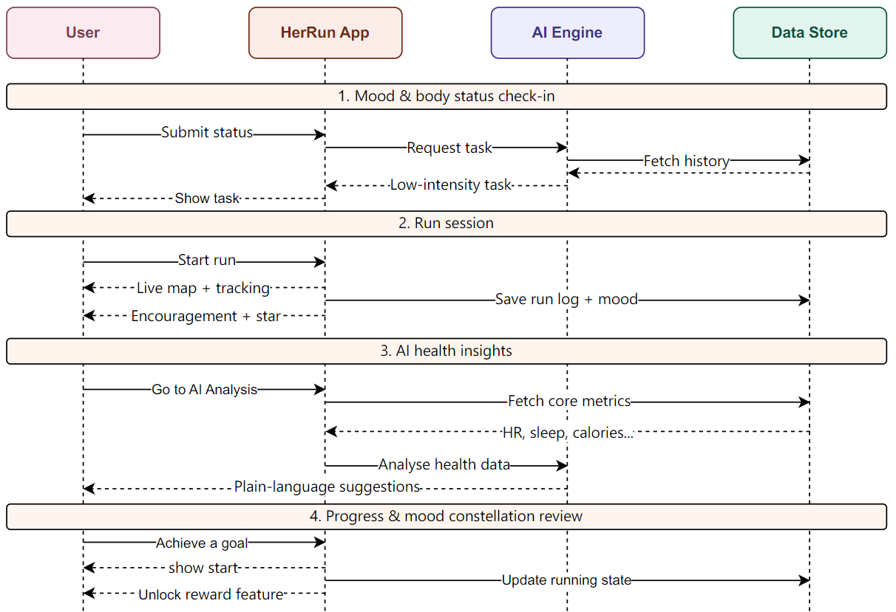

Prompts used for app development
Example prompts included homepage layout, period record saving, running page interaction, SOS overlay, Match buddy feature, music panel layout, health data cards, and mobile overflow fixes.
Technical Implementation
This page explains how HerRun was implemented as an interactive web prototype. The system translates our women-centred running concept into working interface logic, including personalised daily goals, period-aware running adjustment, safety support, route-based running interaction, adaptive music, and wearable-style health feedback.
System Architecture
The sequence diagram below illustrates the platform layers, logic, and data flow within the HerRun system.

High-Fi Prototype
The high-fi prototype is deployed as a public web application through GitHub Pages. It is designed for mobile use and demonstrates the main user journey from homepage to running, period logging, health data, and profile management.
Source Repository
The repository contains the web pages, CSS files, JavaScript interaction logic, image assets, audio assets, and README documentation for the prototype.
AI Logs
We used ChatGPT mainly for coding support, debugging, layout changes, and small wording changes during the HerRun prototype development. The full prompt record is kept in the repository.
Example prompts included homepage layout, period record saving, running page interaction, SOS overlay, Match buddy feature, music panel layout, health data cards, and mobile overflow fixes.
ChatGPT helped us refine HTML structure, CSS spacing, JavaScript state logic, LocalStorage debugging, button alignment, card layout, and mobile page styling.
We manually tested the generated code before using it, including navigation, period record saving, homepage text updates, Start/Pause/Finish, SOS, Match, music panel, and mobile layout.
The main prompts are documented in the project repository under ai-logs/chatgpt-prompts.md. The web version shows selected prompts used during the main software development process.
Individual Contributions
This table documents each member’s role and specific contribution to the HerRun research, portfolio, prototype, testing, and presentation work.
| Team member | Role | Specific Contributions |
|---|---|---|
| Leyi Li | Front-end developer / Portfolio developer | Built the high-fi web prototype pages, including the home page, running page, period calendar, health data page, and profile page. Implemented responsive CSS, mobile phone-frame layout, localStorage period record logic, running map controls, music panel, SOS overlay, and buddy matching interaction. |
| Nuoqian Xu | User researcher / Concept designer | Researched target user pain points, supported persona and requirement development, contributed early sketches, and helped translate women runners’ needs into mood-aware, safety-aware, and low-pressure design directions. |
| Jinlong Huang | Requirement analyst / Content organizer / Portfolio finisher | Collected and analysed user data, supported academic and commercial product comparison, organized requirement content, refined portfolio writing, and contributed to poster layout and research presentation materials. |
| Shuheng Hu | Poster developer / Tester / Video strategist | Developed poster content, supported presentation material preparation, helped conduct A/B testing and product evaluation, and identified usability issues for later interface refinement. |